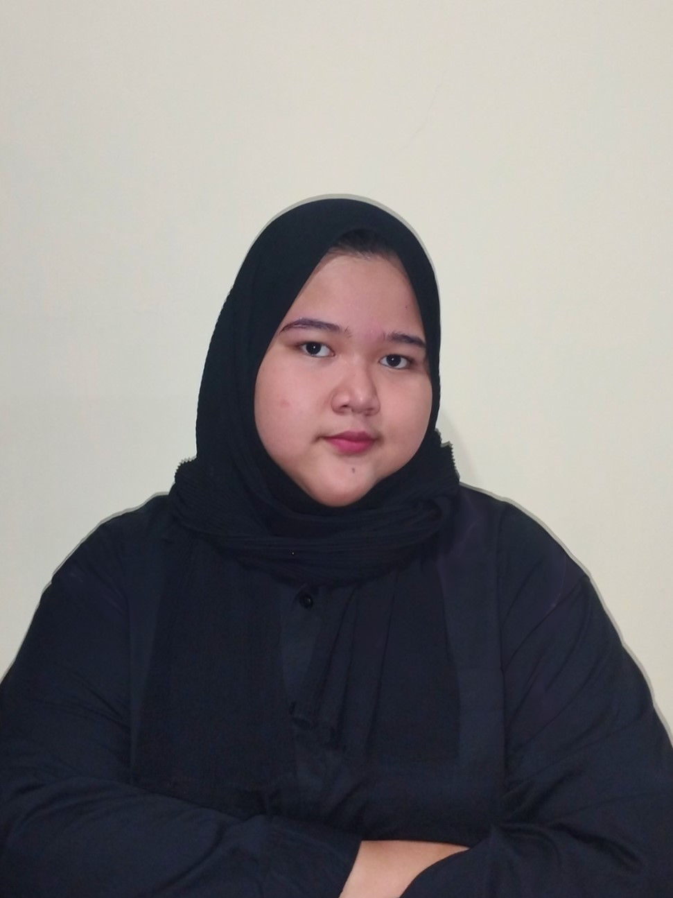

Portofolio Zunaira Silma

zunairasilma42@gmail | +6287801360857 | Bandung, Indonesia
Work Experience (Intern)
Data Management, Telkom Access South Surabaya | July 2021 – September 2021
- Customer Data Validation: Responsible for matching customer data that is still subscribed or not with the server at the office
- Data Accuracy Assurance: Responsible for maintaining the accuracy and integrity of customer data. Required to ensure that our records were up-to-date and aligned with the current status of the customers' subscriptions
Provisioning, Telkom Access South Surabaya | July 2021 – September 2021
- Network Data Coordination: Responsible to coordinate and match customer Optical Distribution Point (ODP) network data dispersed across the Surabaya area
- Network Service Optimization: Responsible on ensuring that the provisioning process was efficient and that customer network connections were properly set up and configured
Experience
- Manager of Research Division at Student’s Activities for Research and Competition Handling Organization (SEARCH) | January 2024 - present
- Staff of Public Relation and Certification Division at ERP Laboratory | February 2024 - present
- Member of Business Process Study Group at SAG Laboratory | March 2024 - present
- Member of Event Management Crew at Genesis 2024 Held by Kaderisasi HMSI Telkom University | April 2024 - present
- Member of Event Division, Company Visit 2024 by SAG Lab | August 2024 - present
- Chairman of the Company Visit 2024 by SEARCH | April - May 2024
- Master of Ceremony Webinar Training Paper by ERP Lab | 20th July 2024
- Master of Ceremony Webinar Competition 101 by ERP Lab | 3rd May 2024
- Member of Public Relations Division at Malang Roadshow by ASKFM (Ayas Umak from Malang Telkom University) | Desember 2023 – February 2024
- Member of Event Division at Webinar Event held by Telkom University Microsoft Representative, by Direktorat PUTI and Microsoft Education | November – Desember 2023
- Master of Ceremony, and Member of the Event Division , Kuliah Umum TKMTI by SAG LAB | October 2023 – November 2023
- Member of Research Division, Kabinet Muda by SEARCH | October - November 2023
- Member of the Publication and Documentation Division, Open Mind 2023 by SEARCH | October - November 2023
- Member of Competition Organizer Division, Java Business Competition by SEARCH | May - October 2023
- Member of the Fundraising Division, Volunteer of Festival Asa dan Harapan by Relawan Siap | March - May 2023
- Member of the Publications and Documentation Division, Search 14th Anniversary by SEARCH | March - May 2023
Achievements
3rd Place in the Application Idea Competition | July 2021
3rd place in the application idea competition held by Airlangga University Information Systems Diploma Student Association
MTA (Microsoft Technology Associate) Certificate | December 2021
Has succesfully completed the requirements to be recognized as a Microsoft Technology Associate for Introduction to Programming using HTML and CSS
Skills & Profiencies
Soft Skill:
- Leadership
- Time Management
- Teamwork
- Analytical Thingking
- Hight Empathy
- Inisiative
Hard Skill:
- Microsoft Office
- Canva
- Figma